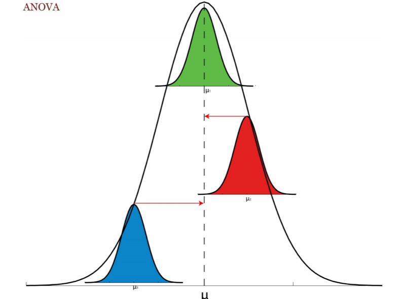
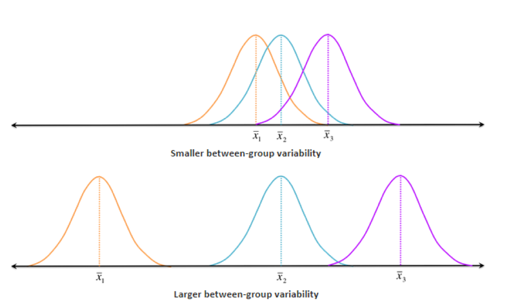
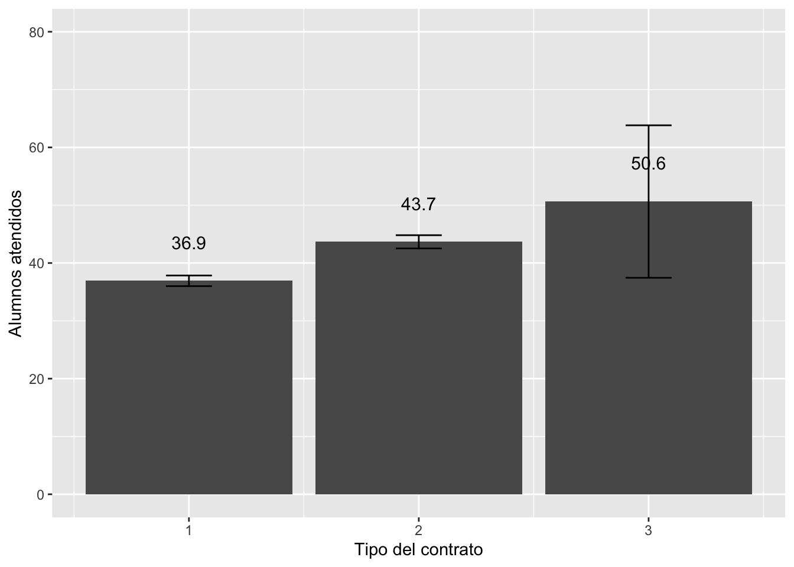
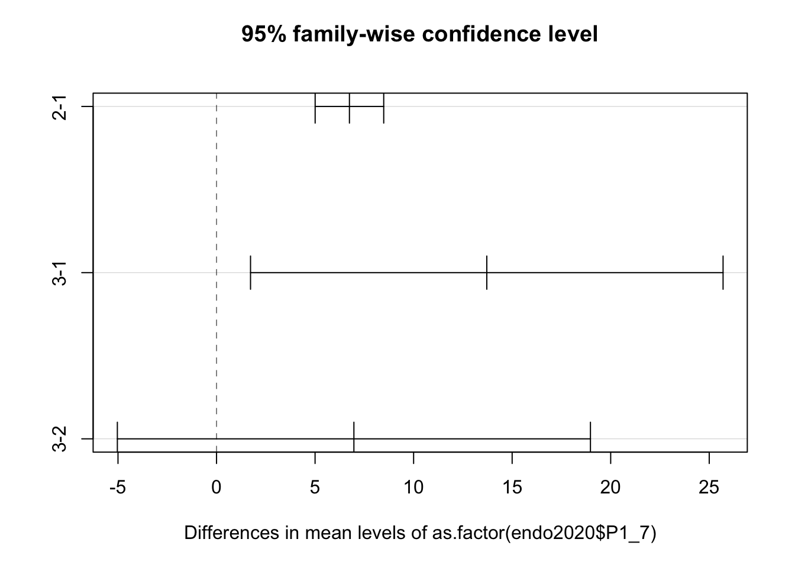
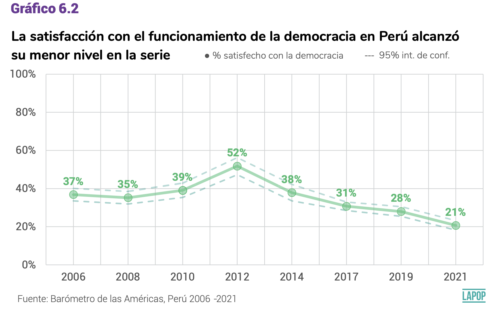
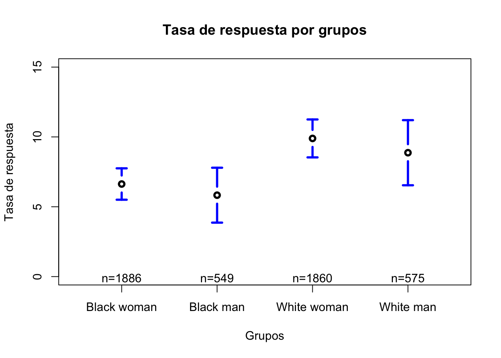

Clase 6-7
Arturo Maldonado
27/09/2022
Introducción
Hasta el momento se ha visto una prueba, la prueba t, para comparar medias de solo 2 grupos. En esta sección veremos cómo expandir la comparación para varias medias usando otra prueba de inferencia. Es decir, se busca analizar la relación entre una variable dependiente cuantitativa (o numérica) y una variable independiente categórica (o de factor).
La media de la variable dependiente es comparada para cada grupo de la variable independiente categórica, típicamente una variable nominal. Por ejemplo:
Ingresos entre grupos étnicos.
CRAEST entre alumnos de especialidades de Ciencias Sociales.
Posición ideológica entre simpatizantes de diferentes partidos.
Para poder hacer estas comparaciones entre varios grupos vamos a usar el test del ANOVA
Test de ANOVA
El test de ANOVA sirve para comparar la media de una variable dependiente numérica entre grupos de una variable de tipo factor (con más de 2 grupos).
Este test parte teóricamente de la distribución general de la variable numérica, la que tiene una media poblacional \(\mu\), y compara esta media poblacional general, con las medias poblacionales de la variable numérica por cada grupo de la variable de factor con n grupos, \(\mu_1...\mu_2...\mu_3...\mu_n\).

Esta prueba se basa en la distribución F y propone la siguiente hipótesis nula para la comparación de una variable numérica X entre n grupos de la variable de factor.
\[ H0: \mu_{x1} = \mu_{x2} = \mu_{x1} =...= \mu_{xn} \]
La hipótesis alternativa que propone es que al menos una media poblacional de un grupo es diferente. Es decir, si se rechaza la H0, quizá todas las medias poblacionales entre grupos sean distintas, quizá algunas o quizá solo una difiere de las otras.
Esta prueba se basa en una comparación entre la variabilidad entre (between) y la variabilidad intra (within).
Variabilidad entre
La variabilidad entre se refiere a la comparación de la media muestral grupal \(\overline{X}_1\) y la media general \(\overline{X}\).
Se entiende como un promedio ponderado de las distancias \(\overline{X_g}-\overline{X}\).
Para evitar que sea una distancia negativa se eleva al cuadrado \((\overline{X_g}-\overline{X})^2\).
Se pondera por el número de observaciones de cada grupo \(n_g*(\overline{X_g}-\overline{X})^2\).
Se suma estas cantidades de cada grupo: \(\sum n_g*(\overline{X_g}-\overline{X})^2\).
Esa suma se divide entre los grados de libertad g-1 (número de grupos -1).
Variabilidad intra
Es la variabilidad entre las observaciones de cada grupo con su media grupal.
Se entiende como el cálculo de la desviación estándar en cada grupo.
Se calcula \(\sum (X_i-\overline{X_g})^2\) en cada grupo. Estas sumatorias se suman.
Esa suma total se divide entre los grados de libertad N-g (total de observaciones - número de grupos).
Estadístico de la prueba F
- Se calcula como F = estimado de la variabilidad entre / estimado de la variabilidad intra
El estadístico F se hace grande cuando: hay mayor variabilidad entre y/o menos variabilidad intra.
El estadístico F se hace pequeño cuando: hay menor variabilidad entre y/o mayor variabilidad intra.
A medida que el estadístico F es más grande, se ubica más en la cola de la distribución, por lo que el p-value será menor, con los que se tendría una mayor evidencia en contra de la H0 sobre la igualdad de medias poblacionales.

Por lo tanto se concluiría que al menos una de las medias grupales sería significativamente diferente de las otras medias grupales. El tema es que la prueba de ANOVA no llega hasta ahí, no nos indica qué medias son diferentes. Para saber qué media(s) es(son) diferente(s) se tiene que hacer un test posterior.
Post hoc: Test de Tukey
Este test sirve para analizar qué diferencias entre grupos son significativas. Es decir, reporta todos los emparejamientos posibles entre grupos y en cada pareja calcula una prueba t de diferencia de medias y la reporta.
Ejemplo para una variable numérica entre 2+ grupos
library(rio)
endo2020 = import("bases/ENDO_REMOTO_2020.dta")Si queremos evaluar si existen diferencias entre el número promedio de alumnos con los que trabaja un profesor entre tipos de profesores (nombrados, contratados con concurso o nombrados con otra modalidad), se puede usar ANOVA.
mean(endo2020$P1_6[endo2020$P1_7==1], na.rm = T)## [1] 36.92272mean(endo2020$P1_6[endo2020$P1_7==2], na.rm = T)## [1] 43.66627mean(endo2020$P1_6[endo2020$P1_7==3], na.rm = T)## [1] 50.63636Para tener una descripción completa entre los 3 grupos, se puede usar:
library(psych)##
## Attaching package: 'psych'## The following objects are masked from 'package:ggplot2':
##
## %+%, alpha## The following objects are masked from 'package:DescTools':
##
## AUC, ICC, SDtabla1 <- describeBy(endo2020$P1_6, group=endo2020$P1_7)
tabla1##
## Descriptive statistics by group
## group: 1
## vars n mean sd median trimmed mad min max range skew kurtosis se
## X1 1 10443 36.92 47.96 23 25.56 13.34 1 380 379 3.35 13.48 0.47
## ------------------------------------------------------------
## group: 2
## vars n mean sd median trimmed mad min max range skew kurtosis se
## X1 1 8408 43.67 53.62 23 31.7 16.31 1 380 379 2.74 8.86 0.58
## ------------------------------------------------------------
## group: 3
## vars n mean sd median trimmed mad min max range skew kurtosis se
## X1 1 99 50.64 66.1 23 36.38 13.34 4 350 346 2.55 7.06 6.64O también se puede hacer una inspección visual.
library(Rmisc)
alumnos.tipo <- group.CI(P1_6~P1_7, endo2020)
alumnos.tipo## P1_7 P1_6.upper P1_6.mean P1_6.lower
## 1 1 37.84264 36.92272 36.00281
## 2 2 44.81252 43.66627 42.52002
## 3 3 63.81960 50.63636 37.45313¿Qué conclusiones iniciales se pueden sacar del gráfico?
library(ggplot2)
graf1 <- ggplot(alumnos.tipo, aes(x=P1_7, y=P1_6.mean))+
geom_bar(stat="identity")+
geom_errorbar(aes(ymin=P1_6.lower, ymax=P1_6.upper), width=0.2)+
geom_text(aes(label=paste(round(P1_6.mean, 1))), vjust=-2.5, size=4)+
xlab("Tipo del contrato") + ylab("Alumnos atendidos")+
ylim(0, 80)
graf1
Esta observación visual se tiene que confirmar con la prueba de ANOVA.
anova1 <- aov(endo2020$P1_6~as.factor(endo2020$P1_7))
summary(anova1)## Df Sum Sq Mean Sq F value Pr(>F)
## as.factor(endo2020$P1_7) 2 223104 111552 43.48 <2e-16 ***
## Residuals 18947 48614075 2566
## ---
## Signif. codes: 0 '***' 0.001 '**' 0.01 '*' 0.05 '.' 0.1 ' ' 1
## 9266 observations deleted due to missingnessCon la prueba de ANOVA y el p-value correspondiente se puede rechazar la H0. Para confirmar las diferencias, se evalúa la prueba de Tukey para analizar cada emparejamiento.
TukeyHSD(anova1)## Tukey multiple comparisons of means
## 95% family-wise confidence level
##
## Fit: aov(formula = endo2020$P1_6 ~ as.factor(endo2020$P1_7))
##
## $`as.factor(endo2020$P1_7)`
## diff lwr upr p adj
## 2-1 6.743547 5.003923 8.483171 0.0000000
## 3-1 13.713640 1.724766 25.702515 0.0200876
## 3-2 6.970093 -5.032398 18.972585 0.3615009Se observa que los resultados comprueban las observaciones del gráfico. Estos emparejamientos se pueden graficar.
plot(TukeyHSD(anova1))
Aquellos emparejamientos cuyas líneas no crucen la línea vertical del cero, se puede decir que hay diferencias estadísticamente significativas.
Otro ejemplo
En esta sección seguiremos usando el paper de (LaLonde 1986) para evaluar los ingresos. En la sección anterior se encontró que había una diferencia estadísticamente significativa entre los afros y no afros en sus ingresos en 1978.
library(rio)
LL <- import("bases/LL.csv")Adicionalmente, se puede evaluar si existen diferencias extrapolables entre aquellos con un grado académico y aquellos que no. Para esto se vuelve a usar la prueba t entre estos dos grupos. En primer lugar, se evalúa si las varianzas son iguales o no. Ojo, el código lanza un mensaje que indica que la variable “degree” no es un factor, y, efectivamente, es importanda como una variable de tipo “int”, pero es coercionada como factor, pues R identifica que solo tiene 2 valores.
library(DescTools)
LeveneTest(LL$re78, LL$nodegree)## Warning in LeveneTest.default(LL$re78, LL$nodegree): LL$nodegree coerced to
## factor.## Levene's Test for Homogeneity of Variance (center = median)
## Df F value Pr(>F)
## group 1 5.7287 0.01694 *
## 720
## ---
## Signif. codes: 0 '***' 0.001 '**' 0.01 '*' 0.05 '.' 0.1 ' ' 1El resultado indica que se puede rechazar la hipótesis de igualdad de varianzas y asumir que son diferentes. Con esto se corre la prueba t.
t.test(re78 ~ nodegree, data = LL, var.equal=F)##
## Welch Two Sample t-test
##
## data: re78 by nodegree
## t = 2.102, df = 228.54, p-value = 0.03664
## alternative hypothesis: true difference in means between group 0 and group 1 is not equal to 0
## 95 percent confidence interval:
## 80.04442 2476.20305
## sample estimates:
## mean in group 0 mean in group 1
## 6451.289 5173.165Se encuentra que sí hay diferencias entre aquellos con un grado académico y aquellos que no. Ahora lo que queremos evaluar es si existen diferencias entre los afroamericanos con grado académico y sin grado académico y los no afroamericanos con grado y sin grado. Para hacer esta evaluación entre 4 grupos, lo primero es construir la variable que es la combinación de las variables “black” y “nodegree”.
LL$axd <-NA
LL$axd[LL$black==0 & LL$nodegree==0] <- 1 #no afro sin grado
LL$axd[LL$black==0 & LL$nodegree==1] <- 2 #no afro con grado
LL$axd[LL$black==1 & LL$nodegree==0] <- 3 #afro sin grado
LL$axd[LL$black==1 & LL$nodegree==1] <- 4 #afro con gradoLa variable creada es una variable numérica, la que se convierte a factor y se etiqueta.
LL$axd <- as.factor(LL$axd)
levels(LL$axd) <- c("No afro s/grado", "No afro c/grado", "Afro s/grado", "Afro c/grado")
table(LL$axd)##
## No afro s/grado No afro c/grado Afro s/grado Afro c/grado
## 36 108 123 455Antes de correr la prueba, es una buena práctica hacer una inspección descriptiva de los ingresos entre estos 4 grupos.
library(psych)
tabla1 <- describeBy(LL$re78, group=LL$axd)
tabla1##
## Descriptive statistics by group
## group: No afro s/grado
## vars n mean sd median trimmed mad min max range skew
## X1 1 36 7376.81 5581.67 6610.41 7178.8 7813.78 0 17395.17 17395.17 0.19
## kurtosis se
## X1 -1.36 930.28
## ------------------------------------------------------------
## group: No afro c/grado
## vars n mean sd median trimmed mad min max range skew
## X1 1 108 6538.44 5631.1 5399.42 5852.19 4980.69 0 30247.5 30247.5 1.43
## kurtosis se
## X1 2.93 541.85
## ------------------------------------------------------------
## group: Afro s/grado
## vars n mean sd median trimmed mad min max range skew
## X1 1 123 6180.41 7324.34 3795.8 4899.53 5627.65 0 36646.95 36646.95 1.67
## kurtosis se
## X1 3.25 660.41
## ------------------------------------------------------------
## group: Afro c/grado
## vars n mean sd median trimmed mad min max range skew
## X1 1 455 4849.1 6059.72 3228.5 3890.72 4786.58 0 60307.93 60307.93 2.77
## kurtosis se
## X1 16.85 284.08O también se puede hacer una inspección visual. A primera vista, no parece haber diferencias entre ningún grupo, en cuanto a ingresos.
library(gplots)
plotmeans(LL$re78~LL$axd, connect=F, barwidth=3, xlab="Grupos", ylab="Ingresos 1978",
main="Ingresos por grupos")
Esta observación visual se tiene que confirmar con la prueba de ANOVA.
anova1 <- aov(LL$re78~LL$axd)
summary(anova1)## Df Sum Sq Mean Sq F value Pr(>F)
## LL$axd 3 4.915e+08 163832513 4.247 0.00549 **
## Residuals 718 2.770e+10 38578131
## ---
## Signif. codes: 0 '***' 0.001 '**' 0.01 '*' 0.05 '.' 0.1 ' ' 1Con la prueba de ANOVA y el p-value correspondiente no se puede rechazar la H0. Este p-value sí sería significativo a 0.10, pero tendríamos una probabilidad mayor de error de tipo I. Para confirmar esto, se corre la prueba de Tukey para analizar cada emparejamiento.
TukeyHSD(anova1)## Tukey multiple comparisons of means
## 95% family-wise confidence level
##
## Fit: aov(formula = LL$re78 ~ LL$axd)
##
## $`LL$axd`
## diff lwr upr p adj
## No afro c/grado-No afro s/grado -838.3673 -3916.417 2239.68259 0.8965403
## Afro s/grado-No afro s/grado -1196.4042 -4227.169 1834.36099 0.7398258
## Afro c/grado-No afro s/grado -2527.7096 -5296.827 241.40753 0.0878455
## Afro s/grado-No afro c/grado -358.0369 -2467.146 1751.07240 0.9720359
## Afro c/grado-No afro c/grado -1689.3424 -3401.304 22.61978 0.0546548
## Afro c/grado-Afro s/grado -1331.3054 -2956.716 294.10557 0.1511262En este caso se observa que la diferencia entre afroamericanos con grado y no afroamericanos con grado es la que explica que ANOVA sea marginalmente significativo.
NOTA: Hay ocasiones como esta en que la prueba de ANOVA indica que existe un emparejamiento con una diferencia significativa, y luego, cuando se evalúan los emparejamientos, no se observa esa diferencia. Eso es debido a que cada emparejamiento de evalúa mediante la prueba t de manera autónoma.
Para una variable categórica
De la misma manera que en la sección anterior, ANOVA también se puede utilizar de manera referencial para evaluar las diferencias de proporciones entre más de 2 grupos. Por ejemplo, el último informe del Barómetro de las Américas del Proyecto de Opinión Pública en América Latina, disponible aquí, presenta esta gráfico sobre satisfacción con la democracia en Perú a lo largo del tiempo.

Como indica el informe, la satisfacción con la democracia se mide con la pregunta: En general, usted diría que está muy satisfecho(a), satisfecho(a), insatisfecho(a) o muy insatisfecho(a) con la forma en que la democracia funciona en Perú? Este pregunta se recodifica en otra variable que agrupa a aquellos que están satisfechos o muy satisfechos. El porcentaje de este grupo es lo que se muestra en el gráfico a lo largo de los años. Es decir, se está comparando esta porcentaje por años.
Para evaluar si existen diferencias en la satisfacción con la democracia en Perú y entre qué años se puede decir que haya diferencia, lo primero es cargar la base de datos del Barómetro para Perú.
lapop <- import("bases/PER_2006-2021.dta")La variable que mide la satisfacción con la democracia es “pn4”. En primer lugar, vamos a describir la variable.
table(lapop$pn4)##
## 1 2 3 4
## 350 3745 6615 1261Los códigos numéricos referidos a “satisfecho” y “muy satisfecho” son el 1 y 2. Se tiene que crear una nueva variable donde estos códigos numéricos sean recodificados como 100.
lapop$pn4rec = car::recode(lapop$pn4, "1:2=100; 3:4=0")
table(lapop$pn4rec)##
## 0 100
## 7876 4095Con esta variable podemos calcular la media de la satisfacción con la democracia en Perú, que es el porcentaje, para todas las rondas del Barómetro.
mean(lapop$pn4rec, na.rm = T)## [1] 34.20767También se podría calcular el porcentaje de satisfacción con la democracia por año. La variable que indica el año es “year”. Antes de calcular, la variable “year” es cargada como una variable numérica, de tipo “num”. Para poder operar en anova, esta variable se tiene que convertir en una variable de tipo factor.
lapop$year = as.factor(lapop$year)
table(lapop$year)##
## 2006 2008 2010 2012 2014 2017 2019 2021
## 1500 1500 1500 1500 1500 2647 1521 3038Ahora, calculamos los porcentajes de satisfacción con la democracia por años.
tabla2 = describeBy(lapop$pn4rec, group=lapop$year)
tabla2##
## Descriptive statistics by group
## group: 2006
## vars n mean sd median trimmed mad min max range skew kurtosis se
## X1 1 1420 36.83 48.25 0 33.54 0 0 100 100 0.55 -1.7 1.28
## ------------------------------------------------------------
## group: 2008
## vars n mean sd median trimmed mad min max range skew kurtosis se
## X1 1 1437 35.21 47.78 0 31.54 0 0 100 100 0.62 -1.62 1.26
## ------------------------------------------------------------
## group: 2010
## vars n mean sd median trimmed mad min max range skew kurtosis se
## X1 1 1441 39.07 48.81 0 36.34 0 0 100 100 0.45 -1.8 1.29
## ------------------------------------------------------------
## group: 2012
## vars n mean sd median trimmed mad min max range skew kurtosis se
## X1 1 705 51.77 50 100 52.21 0 0 100 100 -0.07 -2 1.88
## ------------------------------------------------------------
## group: 2014
## vars n mean sd median trimmed mad min max range skew kurtosis se
## X1 1 1432 37.85 48.52 0 34.82 0 0 100 100 0.5 -1.75 1.28
## ------------------------------------------------------------
## group: 2017
## vars n mean sd median trimmed mad min max range skew kurtosis se
## X1 1 2569 34.02 47.39 0 30.04 0 0 100 100 0.67 -1.55 0.93
## ------------------------------------------------------------
## group: 2019
## vars n mean sd median trimmed mad min max range skew kurtosis se
## X1 1 1491 27.97 44.9 0 22.46 0 0 100 100 0.98 -1.04 1.16
## ------------------------------------------------------------
## group: 2021
## vars n mean sd median trimmed mad min max range skew kurtosis se
## X1 1 1476 20.66 40.5 0 13.37 0 0 100 100 1.45 0.1 1.05También se puede crear un gráfico de comparación de media. En la
especificación connect=T indica que queremos que los
porcentajes de satisfacción con la democracia se conecten, de la misma
manera que en el gráfico 6.2.
library(gplots)
plotmeans(lapop$pn4rec~lapop$year, connect=T, barwidth=3, xlab="Año",
ylab="Satisfacción con la democracia",
ylim=c(0, 100))## Warning in arrows(x, li, x, pmax(y - gap, li), col = barcol, lwd = lwd, :
## zero-length arrow is of indeterminate angle and so skipped
## Warning in arrows(x, li, x, pmax(y - gap, li), col = barcol, lwd = lwd, :
## zero-length arrow is of indeterminate angle and so skipped
## Warning in arrows(x, li, x, pmax(y - gap, li), col = barcol, lwd = lwd, :
## zero-length arrow is of indeterminate angle and so skipped
## Warning in arrows(x, li, x, pmax(y - gap, li), col = barcol, lwd = lwd, :
## zero-length arrow is of indeterminate angle and so skipped
## Warning in arrows(x, li, x, pmax(y - gap, li), col = barcol, lwd = lwd, :
## zero-length arrow is of indeterminate angle and so skipped
## Warning in arrows(x, li, x, pmax(y - gap, li), col = barcol, lwd = lwd, :
## zero-length arrow is of indeterminate angle and so skipped
## Warning in arrows(x, li, x, pmax(y - gap, li), col = barcol, lwd = lwd, :
## zero-length arrow is of indeterminate angle and so skipped
## Warning in arrows(x, li, x, pmax(y - gap, li), col = barcol, lwd = lwd, :
## zero-length arrow is of indeterminate angle and so skipped## Warning in arrows(x, ui, x, pmin(y + gap, ui), col = barcol, lwd = lwd, :
## zero-length arrow is of indeterminate angle and so skipped
## Warning in arrows(x, ui, x, pmin(y + gap, ui), col = barcol, lwd = lwd, :
## zero-length arrow is of indeterminate angle and so skipped
## Warning in arrows(x, ui, x, pmin(y + gap, ui), col = barcol, lwd = lwd, :
## zero-length arrow is of indeterminate angle and so skipped
## Warning in arrows(x, ui, x, pmin(y + gap, ui), col = barcol, lwd = lwd, :
## zero-length arrow is of indeterminate angle and so skipped
## Warning in arrows(x, ui, x, pmin(y + gap, ui), col = barcol, lwd = lwd, :
## zero-length arrow is of indeterminate angle and so skipped
## Warning in arrows(x, ui, x, pmin(y + gap, ui), col = barcol, lwd = lwd, :
## zero-length arrow is of indeterminate angle and so skipped
## Warning in arrows(x, ui, x, pmin(y + gap, ui), col = barcol, lwd = lwd, :
## zero-length arrow is of indeterminate angle and so skipped
## Warning in arrows(x, ui, x, pmin(y + gap, ui), col = barcol, lwd = lwd, :
## zero-length arrow is of indeterminate angle and so skipped
Para formalizar la comparación de satisfacción con la democracia por años, calculamos la prueba de anova. El p-value < 0.05. Esto nos lleva a poder rechazar la H0 de igualdad de medias grupales poblacionales. Por lo tanto concluimos que alguna de estas medias grupales es diferente. Es decir, podemos concluir que al menos un porcentaje de satisfacción con la democracia es diferente entre los años en Perú.
anova2 <- aov(lapop$pn4rec~lapop$year)
summary(anova2)## Df Sum Sq Mean Sq F value Pr(>F)
## lapop$year 7 610692 87242 39.64 <2e-16 ***
## Residuals 11963 26331267 2201
## ---
## Signif. codes: 0 '***' 0.001 '**' 0.01 '*' 0.05 '.' 0.1 ' ' 1
## 2735 observations deleted due to missingnessPara comprobar que diferencias entre años particulares son estadísticamente significativas, calculamos la prueba post-hoc de Tukey. Esta tabla nos muestra que hay varios emparejamientos entre años que tienen unb p-value < 0.05, por ejemplo, la diferencia en satisfacción con la democracia entre 2006 y 2012 o esta diferencia entre 2008 y 2012.
TukeyHSD(anova2)## Tukey multiple comparisons of means
## 95% family-wise confidence level
##
## Fit: aov(formula = lapop$pn4rec ~ lapop$year)
##
## $`lapop$year`
## diff lwr upr p adj
## 2008-2006 -1.618738 -6.940362 3.7028860 0.9840267
## 2010-2006 2.239104 -3.078848 7.5570561 0.9077499
## 2012-2006 14.942064 8.389634 21.4944934 0.0000000
## 2014-2006 1.018176 -4.308064 6.3444159 0.9991130
## 2017-2006 -2.809966 -7.512884 1.8929522 0.6123763
## 2019-2006 -8.863179 -14.136689 -3.5896695 0.0000098
## 2021-2006 -16.167029 -21.453594 -10.8804645 0.0000000
## 2010-2008 3.857842 -1.444242 9.1599271 0.3481958
## 2012-2008 16.560802 10.021243 23.1003603 0.0000000
## 2014-2008 2.636914 -2.673483 7.9473116 0.8049437
## 2017-2008 -1.191228 -5.876196 3.4937406 0.9945574
## 2019-2008 -7.244441 -12.501949 -1.9869326 0.0007803
## 2021-2008 -14.548291 -19.818894 -9.2776880 0.0000000
## 2012-2010 12.702959 6.166389 19.2395298 0.0000001
## 2014-2010 -1.220928 -6.527645 4.0857890 0.9970843
## 2017-2010 -5.049070 -9.729867 -0.3682737 0.0239649
## 2019-2010 -11.102283 -16.356075 -5.8484922 0.0000000
## 2021-2010 -18.406134 -23.673029 -13.1392383 0.0000000
## 2014-2012 -13.923888 -20.467203 -7.3805726 0.0000000
## 2017-2012 -17.752030 -23.798812 -11.7052471 0.0000000
## 2019-2012 -23.805243 -30.305708 -17.3047778 0.0000000
## 2021-2012 -31.109093 -37.620153 -24.5980325 0.0000000
## 2017-2014 -3.828142 -8.518353 0.8620685 0.2065387
## 2019-2014 -9.881355 -15.143535 -4.6191750 0.0000004
## 2021-2014 -17.185205 -22.460469 -11.9099420 0.0000000
## 2019-2017 -6.053213 -10.683456 -1.4229701 0.0019056
## 2021-2017 -13.357063 -18.002170 -8.7119568 0.0000000
## 2021-2019 -7.303850 -12.525869 -2.0818317 0.0005946Siguiendo con el ejemplo sobre discriminación en CVs (Bertrand and Mullainathan 2004) que buscan evaluar si hay una discriminación en el mercado laboral entre afroamericanos y angloamericanos y entre hombres y mujeres. Estos investigadores enviaron CVs manipulando la raza y el género percibidos mediante nombres claramente asociados a los afroamericanos y nombres claramente asociados a angloamericanos, tanto nombres masculinos como femeninos.
En la sección anterior se encontró que sí había un sesgo en contra de los afroamericanos, pero que no se podía decir que hubiera un sesgo en contra de las mujeres en el mercado laboral. En los resultados comparando género, cuando se compara hombre y mujeres, en ambos grupos hay afroamericanos y angloamericanos.
Una posibilidad es que haya una discriminación en el mercado laboral aún mayor en contra de las mujeres afroamericanos con respecto a los hombres afroamericanos, y de estos con respecto a los angloamericanos, sean hombre o mujeres. Es decir, que la tasa de respuesta a CVs sería menor para las mujeres afro que para los hombres afro y estos menores que la tasa de respuesta a los CVs de hombre o mujeres angloamericanos.
Para evaluar esta hipótesis, primero cargamos nuevamente la base de datos.
library(rio)
cv <- import("https://raw.github.com/arturomaldonado/Estadistica_1.0/main/cv.csv")En esta base de datos se tiene la raza y el género como variables separadas. Para hacer la evaluación que se busca se requiere crear una nueva variable de factor que combine los 4 grupos de raza y género. Se tiene que prestar atención a la forma de calcular una variable como condición de las variables “race” y “sex”, ambas de tipo “chr”.
cv$rxg <- NA
cv$rxg[cv$race=="black" & cv$sex=="female"] <- 1
cv$rxg[cv$race=="black" & cv$sex=="male"] <- 2
cv$rxg[cv$race=="white" & cv$sex=="female"] <- 3
cv$rxg[cv$race=="white" & cv$sex=="male"] <- 4
cv$rxg = as.factor(cv$rxg)
levels(cv$rxg) <- c("Black woman", "Black man", "White woman", "White man")
table(cv$rxg)##
## Black woman Black man White woman White man
## 1886 549 1860 575Lo primero es recordar que la tasa de respuesta general es de 8% para toda la muestra.
mean(cv$call)*100## [1] 8.049281Ahora podemos calcular la tasa de respuesta a los CVs por cada grupo. Esta comparación se puede guardar en un objeto “tabla1”.
library(psych)
tabla2 <- describeBy(cv$call*100, group=cv$rxg)
tabla2##
## Descriptive statistics by group
## group: Black woman
## vars n mean sd median trimmed mad min max range skew kurtosis se
## X1 1 1886 6.63 24.88 0 0 0 0 100 100 3.48 10.15 0.57
## ------------------------------------------------------------
## group: Black man
## vars n mean sd median trimmed mad min max range skew kurtosis se
## X1 1 549 5.83 23.45 0 0 0 0 100 100 3.76 12.16 1
## ------------------------------------------------------------
## group: White woman
## vars n mean sd median trimmed mad min max range skew kurtosis se
## X1 1 1860 9.89 29.86 0 0 0 0 100 100 2.68 5.21 0.69
## ------------------------------------------------------------
## group: White man
## vars n mean sd median trimmed mad min max range skew kurtosis se
## X1 1 575 8.87 28.46 0 0 0 0 100 100 2.89 6.34 1.19También se puede ver esta comparación descriptiva en forma de gráfico.
library(gplots)
plotmeans(cv$call*100~cv$rxg, connect=F, barwidth=3, xlab="Grupos", ylab="Tasa de respuesta",
ylim=c(0, 15), main="Tasa de respuesta por grupos")
Para comprobar esta comparación “informal” se tiene que correr el test de ANOVA.
anova3 <- aov(cv$call*100~cv$rxg)
summary(anova3)## Df Sum Sq Mean Sq F value Pr(>F)
## cv$rxg 3 13224 4408 5.973 0.000464 ***
## Residuals 4866 3591244 738
## ---
## Signif. codes: 0 '***' 0.001 '**' 0.01 '*' 0.05 '.' 0.1 ' ' 1Se obtiene un estadístico F de 5.97, con lo que se calcula un p-value < 0.05. Esto nos lleva a poder rechazar la H0 de igualdad de medias grupales poblacionales. Por lo tanto concluimos que alguna de estas medias grupales es diferente.
Para saber cuál es diferente se tiene que correr el Test de Tukey.
TukeyHSD(anova3)## Tukey multiple comparisons of means
## 95% family-wise confidence level
##
## Fit: aov(formula = cv$call * 100 ~ cv$rxg)
##
## $`cv$rxg`
## diff lwr upr p adj
## Black man-Black woman -0.7990041 -4.1847039 2.586696 0.9300509
## White woman-Black woman 3.2646894 0.9832311 5.546148 0.0013600
## White man-Black woman 2.2417815 -1.0841019 5.567665 0.3069770
## White woman-Black man 4.0636935 0.6726627 7.454724 0.0112033
## White man-Black man 3.0407856 -1.1252122 7.206783 0.2385995
## White man-White woman -1.0229079 -4.3542181 2.308402 0.8594370Este test nos brinda resultados por cada emparejamiento. Se concluye que hay 2 emparejamientos relevantes, que llevan a la conclusión que las mujeres blancas tienen una tasa de respuesta mayor que los hombre y mujeres afro.
Estas diferencias se pueden ver de manera gráfica.
plot(TukeyHSD(anova3))
Aquellos emparejamientos cuyas líneas no crucen la línea vertical del cero, se puede decir que hay diferencias estadísticamente significativas.